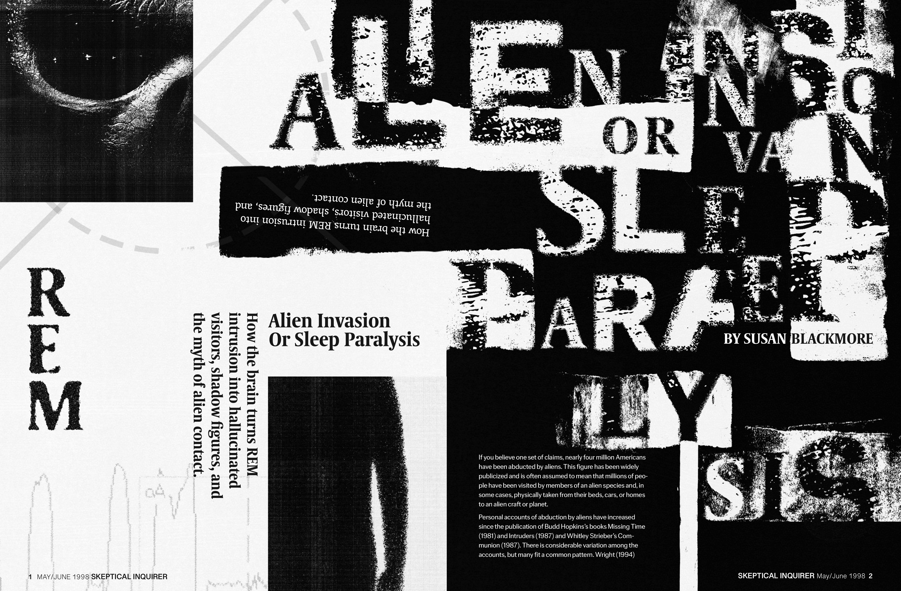
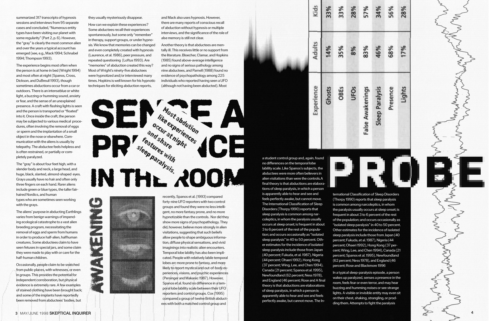

Case Study · Design · 2025
Editorial Spreads
This editorial spread was created for a project selecting an article and designing a magazine layout around it. I chose "Alien Invasion or Sleep Paralysis?" because the topic fascinated me and offered a chance to explore the visual confusion between two surreal experiences.


Concept
The concept centers on visualizing the psychological uncertainty people experience when distinguishing between sleep paralysis hallucinations and perceived alien encounters — two phenomena that share unsettling similarities in people's minds.
Design Approach
Inspired by David Carson's chaotic, rule-breaking editorial work, I used cropped images of an alien face and a shadowy figure to emphasize the confusion between sleep paralysis and alien abduction. Layered text, fragmented imagery, and dreamlike compositions create a sense of uncertainty throughout.
The layout intentionally blurs boundaries between elements, allowing imagery to overlap and text to break from traditional grids — reinforcing the disorienting nature of the subject matter.
Result
The final spread successfully captures the dreamlike tension and confusion at the heart of the article. The design balances legibility with visual chaos, guiding readers through the content while immersing them in the surreal, uncertain atmosphere of the subject.